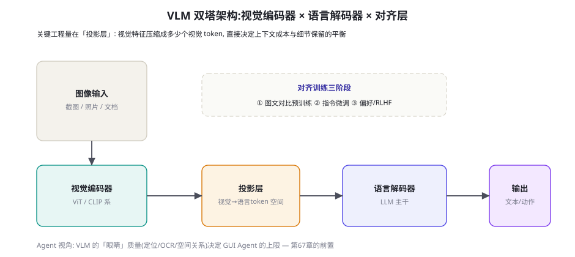
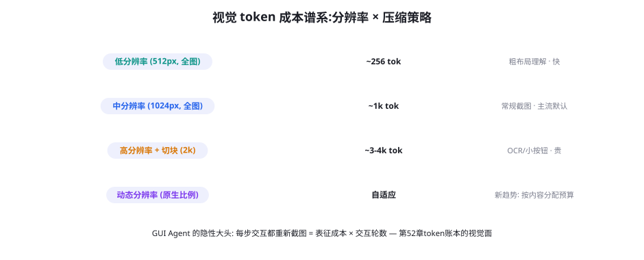

视觉语言模型与多模态 Agent 基础
多模态篇开章：从「文字 Agent」到「有眼睛的 Agent」。本章讲 VLM（视觉语言模型）的架构骨架（视觉编码器 × 投影层 × 语言解码器）、视觉 token 的成本账本、多模态提示与工具的新形态，以及「视觉能力 = GUI Agent 上限」的前置逻辑——为后续六章（GUI/移动/具身/游戏/科学/语音）打地基。
VLM 双塔架构：三块拼图

三块拼图的要点与 Agent 关联性排序：① 视觉编码器（ViT/CLIP 系）——把图像切成 patch（16×16 或更细）、编码成特征向量——决定「看得多细」（分辨率、patch 大小、动态分辨率支持）——对 GUI Agent 最关键（按钮定位依赖细粒度感知）；② 投影层（Projector/Adapter）——视觉特征到语言空间的「翻译器」——Q-Former（可学习的查询压缩）、线性投影（LLaVA 系的简洁路线）、Cross-Attention（Flamingo 系）——决定「一张图花多少 token」（256~4k+，本页 66.2）——对成本结构最关键；③ 语言解码器——LLM 主干统一处理文本与视觉 token——决定「看懂后怎么想」（推理、指令遵循——继承文本模型全部能力）。对齐训练三阶段（图中虚线框）：图文对比预训练（CLIP 式对齐）→ 多模态指令微调（视觉问答/描述/定位的 SFT）→ 偏好与 RL（对齐 + 推理增强）——三阶段的成熟度直接决定 VLM 的「Agent 就绪度」（只完成前两阶段的开源模型，在「看图做决策」的任务上明显弱于完成三阶段的）。
| 能力 | 考察内容 | Agent 场景依赖度 | 代表评测 |
|---|---|---|---|
| 图像描述/理解 | 整体语义把握 | 中（场景理解的基础） | Caption 系 / MMBench |
| 视觉定位（Grounding） | 「找到并框出 X」 | 高（GUI 点击的前置） | RefCOCO 系 |
| OCR 与文档理解 | 文字读取、表格结构 | 高（企业文档场景） | DocVQA / OCRBench |
| 空间/计数推理 | 相对位置、数量、几何 | 高（桌面/物理场景） | BLINK / VSR |
| 多图与时序理解 | 多帧对比、操作序列 | 极高（Agent 轨迹理解） | BLINK / OSWorld 相关 |
视觉 token 的成本账本

四档位的适用场景与省钱策略：低分辨率全图——场景级理解（「这个页面大概是什么」）——便宜但小元素全盲（GUI 场景基本不够用）；中分辨率全图——主流默认（一张 1024px 截图 ~1k token）——布局与中等元素可见，小按钮仍弱；高分辨率 + 切块——2k 图像切成多个子图分别编码（部分模型支持「原图 + 高清局部」的双路输入）——OCR 与小按钮的场景刚需，token 成本 3~4 倍；动态分辨率——按内容复杂度自适应分配预算（简单页面低分辨率、密集表格高分辨率）——2024-2025 的新趋势，本质是「视觉 token 的按需分配」（第 26 章预算思想在视觉的落地）。Agent 场景的省钱三板斧：① 差分截图（只送「变化区域」——页面没动就不重复送表征，第 52 章增量表征的图像版）；② 裁剪聚焦（先低分辨率定位区域，再高分辨率细看 ROI——两阶段视觉，与人类扫视-注视的眼动模式同构）；③ DOM/无障碍树的混合表征（有结构信息就别靠视觉——第 52 章表征之争的成本版）。三板斧叠加通常能把 GUI Agent 的视觉成本压下 50%+。
「两阶段视觉」（裁剪聚焦）的工具化实现——它是省钱三板斧里效果最显著的一件，代码骨架：
class VisionToolkit:
"""主动视觉三工具: 让模型自己决定「哪里要看清」。"""
def survey(self, screenshot) -> dict:
"""阶段一: 低分辨率全局扫描 (便宜)。
返回: 布局结构 + 候选交互元素的粗框。"""
tokens = encode_lowres(screenshot, budget=600)
return vlm.analyze(tokens, task="layout+candidates")
def zoom_in(self, screenshot, bbox, question) -> str:
"""阶段二: 高分辨率局部细看 (只在需要时)。
bbox 来自 survey 的粗框或模型自己的估计。"""
crop = crop_with_margin(screenshot, bbox, margin=0.15)
tokens = encode_hires(crop, budget=1200)
return vlm.answer(tokens, question)
def cross_check(self, screenshot, claim) -> bool:
"""感知冗余: 关键读数的第二通道验证。
claim: VLM 声称的读数/定位 → 独立方式复核。"""
if claim.kind == "number":
return ocr_region(screenshot, claim.bbox) == claim.value
if claim.kind == "element_position":
return dom_lookup(claim.selector) is not None
return vlm.reeval(screenshot, claim, temp=0.0) == claim.value
# Agent 循环中的典型用法:
# 1. survey() → 粗定位「提交按钮约在 (0.8, 0.9)」
# 2. zoom_in(bbox) → 确认按钮文字与可用状态 (细看才花高清预算)
# 3. 若是金额/坐标类关键读数 → cross_check() 双通道确认
# 三步的 token 总账 ≈ 一次高清全图, 但准确率显著更高。三工具的设计思想是「把视觉的预算分配权交给模型」——survey/zoom 的分工模拟了人类「扫视-注视」的眼动经济（大部分区域扫一眼、少数区域盯住看），cross_check 则是感知冗余（第 66.3 节传导链对策）的工具化。注意账本注释：三步总成本与一次高清全图相当，但精度更高——「同样的钱花在刀刃上」是多模态工程的核心经济学，这套三工具可以直接长在第 17 章的工具协议上（它们就是三个普通的 MCP 工具）。
多模态提示与工具的新形态
多模态给提示工程与工具设计带来的形态变化：提示侧的三个新语法：① 图文交错的引用（「第二张图里的红色按钮」——引用要指明图序与空间位置，模糊指代是 VLM 提示的头号坑）；② 视觉锚定指令（「围绕红框区域回答」——用坐标/框选把注意力锚到 ROI，等价于文本提示里的引号强调）；③ 多图对齐任务（「对比这两张截图的差异」——任务的时序/空间结构要在提示里显式声明）。工具侧的三个新形态：① 视觉工具的「取景器」化——crop/zoom/get_bbox 作为一等工具（让模型自己决定「哪里要看清」——主动视觉，比一次塞高清全图便宜且准）；② 视觉输出的工具返回（摄像头帧、图表截图作为工具返回值——工具协议（第 17 章）的返回类型扩展）；③ 跨模态校验工具（OCR 验证 VLM 读到的文字、坐标计算验证位置判断——「多模态的自校验」（第 22 章 reflection 的视觉版））。多模态提示与工具的元原则：文本时代的原则全部保留（清晰、结构化、可校验——第 7/17 章），新增的只有一条——「空间与模态的指代必须显式」（图序、坐标、区域、通道——模糊指代在视觉里的代价远高于文本，因为「看见什么」本身就有歧义）。
GUI/具身 Agent 有一个残酷的传导链：感知误差 → 状态误判 → 动作错误，且误差在链路上放大。VLM 的三类高频感知误差与 Agent 后果：① 定位误差（按钮框偏 20px → 点击落空或误触相邻控件——GUI Agent 的「点错」多数不是决策错而是感知错）；② OCR 误差（把「¥100」读成「¥1000」→ 决策依据全错——数字的视觉误差是高危误差）；③ 状态误读（把「加载中」读成「已完成」→ 在未就绪的状态上执行——第 52 章时间选导的感知面）。传导链的工程对策是「感知冗余」：关键感知点用第二条通道交叉验证（视觉定位 + DOM 查询双确认、视觉读数 + API 读数对照——「双通道标记」思想（第 59 章）从安全域借到感知域）——感知冗余的成本只在「关键动作前」支付（与 L2/L3 分级联动），全量冗余是浪费。给多模态 Agent 团队的一条验收纪律：失败案例的归因要区分「感知错」与「决策错」——两者的改进手段完全不同（感知错 → 换模型/加冗余/提分辨率；决策错 → 提示/训练/流程）——混着归因会让优化打偏。
测一测你的候选 VLM 的「Agent 感知基线」：截 5 张你业务的典型页面，构造 20 个感知问题（定位类 8：「提交按钮在哪个坐标区域？」、OCR 类 6：「表格第三行的金额是多少？」、状态类 6：「这个按钮当前是可用还是禁用？」）。用三个分辨率档（512/1024/2k+切块）各跑一遍，画一张「分辨率 × 题型」的正确率热力表。你会看到：定位与 OCR 随分辨率陡升、状态判断对分辨率不敏感（靠语义）——这张表就是你的「视觉预算分配表」（哪些任务值得上高分辨率、哪些低档即可）——多模态优化的第一手数据，两小时拿到。
把「感知/决策归因」纪律落成一个归因模板（多模态失败分析的标准表格），供团队复盘时直接使用：
| 归因问题 | 感知错的证据 | 决策错的证据 | 判定后动作 |
|---|---|---|---|
| 模型「看到」了什么？ | 重问一遍感知问题（不带任务语境）——答错了 → 感知层 | 感知重问全对但任务仍失败 → 决策层 | 感知错 → 下行改进 |
| 误差类型是什么？ | 定位偏 / OCR 错 / 状态误读（三型对号） | 推理跳步 / 规则误解 / 目标偏离 | OCR/数字错 → 高优先级（高危误差） |
| 改进的第一杠杆？ | 提分辨率？加冗余？换模型？加感知工具？ | 改提示？改准则？改流程？训练？ | 先便宜后贵：工具 > 提示 > 分辨率 > 换模型 |
| 同类误差的系统性？ | 同类型页面/控件是否都错（分布问题） | 同类型任务是否都错（能力缺口） | 系统性误差 → 进评测集回归（第 56 章） |
「感知外包」的工具箱值得单独列一张清单——它是多模态幻觉治理（本章 FAQ2）的正面工程，把「模型不擅长的感知」交给「擅长的专用工具」：① 精确计数 → 检测模型（YOLO/开放词汇检测器数目标——VLM 的计数不可信是确定结论）；② 精确坐标 → 定位专用模型（Grounding DINO 类「文本→框」——通用 VLM 的定位精度不稳定，专用定位器便宜且准）；③ 精确文字 → OCR 引擎（PaddleOCR/Tesseract——OCR 是成熟技术，让 VLM「看字」是把成熟问题交给不成熟的方法）；④ 精确空间 → 几何计算（框的重叠、距离、包含关系——一写代码就解决的问题不要交给「视觉直觉」）；⑤ 图表读数 → 表格抽取管线（图表数字化工具——图表理解的两条路里「读像素猜数值」永远输给「结构化抽取」）。清单的共同句式：「凡是能落成确定性计算的感知，都外包给确定性计算」——VLM 保留的是「语义层」（这是什么、意味着什么、该怎么办）——语义与几何的分界线就是感知外包的分界线。这条清单与第 48 章「能力外置」的哲学完全同源：小模型时代把知识外置给检索，VLM 时代把精确感知外置给专用工具——「系统补模型之短」在多模态域的再度上演。
多模态工具协议（第 17 章协议的多模态扩展）的三个接口变化值得显式列出，供做工具层的团队改造参考：① 返回类型扩展——工具返回不再只是文本：图像帧（截图/摄像头）、音频段、坐标框、二进制文档——协议要为每类返回声明「如何进上下文」（图像：压缩后嵌入还是存盘给引用？大文件：句柄化——返回 file_id 而非内容，模型按需拉取——这是视觉 token 账本的协议层保障）；② 参数类型的空间语义——坐标参数的单位与参照系声明（绝对像素？相对比例？哪个显示器的坐标系？——多显示器/缩放场景的坐标歧义是 GUI Agent 的高频 bug 源，协议层强制声明参照系）；③ 感知类工具的置信契约——感知工具的返回应带置信/来源（「OCR 置信 0.98」「检测框 IoU 0.9」——置信声明让上层决策「要不要 cross_check」有了依据——感知冗余的触发逻辑就建立在返回的置信字段上）。三变化合起来的协议观：多模态工具协议 = 文本协议 + 空间/模态的显式语义 + 置信的字段化——改造量不大（协议 schema 加字段），但它是第 67-68 章所有 GUI/移动工程的地基——协议层的欠债会在应用层加倍偿还。
一个给「多模态 Agent 评测」的前置提醒（为第 67 章垫场）：多模态评测的成本结构比文本域更极端——视觉表征的成本 + 交互环境的工程 + 判定的多模态化（「这个点击结果对不对」要看截图）三层叠加，使得「跑一次多模态评测」的边际成本是文本评测的 5~20 倍。预算策略因此更激进地偏向「分层」：感知层评测便宜（静态图像 + 断言，无环境）要高频跑（本章实验的 20 题就是感知层集）、交互层评测贵（真环境）做周级、端到端评测最贵做发版级——与第 54 章金字塔同构但「层间成本差」更大——「便宜层必须建厚」在多模态域不是建议是生存策略（不建感知层集的团队，每次交互层失败都无法归因是感知还是决策——回到归因表的死循环）。
「多模态上下文的时间维度」再补一段，因为视频与屏幕录像正在成为多模态 Agent 的主流输入（屏幕录制作为任务演示、视频作为教程材料）：视频进入 Agent 上下文的三个策略档位：① 关键帧抽取——按「视觉变化度」采样（场景切换、元素变化处抽帧，静止段跳过——变化度检测用帧间差分即可，便宜有效）——典型压缩比 30:1（30fps 的 1 分钟视频 → 60~120 关键帧）——时间结构保留是它的优势（帧序即时间轴）；② 结构化转写——视频先过「描述管线」（每关键帧生成文字描述 + OCR）→ 上下文里只进转写文本——成本最低，但视觉细节全损——适合「内容理解」型任务（视频会议纪要、教程要点）；③ 双路混合——转写进上下文 + 关键帧按需调取（引用「第 47 帧」时才把那一帧送进来——句柄化的时间轴）——「转写为目录、帧为原文」的检索式结构，是长视频任务的正确形态。三档位的选择判据与图像域一致：任务需要像素级 grounding 吗？需要（「视频里演示的那个操作步骤」）→ 双路；不需要（「视频讲了什么」）→ 转写。视频上下文的成本教训与图像同源：「全量高保真」永远是最贵的错误答案。
一个给采购与选型的「多模态模型对比表模板」，让季度复审（本章 FAQ3 的流程）有现成的载体：表格的列是六个评测维度——① 感知三强项（定位/OCR/状态识别——你业务依赖的前两名）的得分；② 视觉 token 效率（等分辨率下的 token 消耗——成本模型的输入）；③ 多图支持（能否一次吃多图、最大张数）；④ 指令遵循（视觉锚定指令的服从度——「围绕红框回答」类）；⑤ 幻觉率（视觉幻觉/计数/OCR 三型的抽样错误率——本章 FAQ2 的测试集复用）；⑥ 价格与速率（每图 token 单价、限流）。行是候选模型。每个季度用同一份「业务感知集」（本章实验的 20 题扩展版）重跑一次填表——选型表的「纵向可比性」靠固定的评测集保证——换评测集的对比表是娱乐材料。这个模板与第 53 章「分数相关性地图」配合使用：多模态域的簇结构比文本域更破碎（感知强 ≠ 推理强），更要靠自己的业务集锚定。
补一个实操细节结束本章：多模态提示里的「图序引用」规范。多图任务的引用混乱是新手最高频的坑（「第一张图」是用户发的还是工具返回的？「上面那张」指哪张？）——团队级规范三行：① 图像编号显式注入（上下文构造时为每张图注入「[图 1]（用户上传）」「[图 2]（工具 screenshot 返回）」的元信息行——来源与序号一次说清）；② 空间词的参照约定（禁用「上面那张」，用编号；描述位置用「左上/右下」时必须以「图 N」为参照）；③ 模型回答的引用规范（要求回答引用图号——「图 2 中的红色按钮」——回答里的模糊指代同样要治）。三行规范写进团队的多模态提示规范（第 64 章 Spec 的模态附录），一次约定，所有多模态任务受益——多模态工程的很多价值就在这种「小规范大回报」的细节里。
三个高频疑问
Q：多模态 Agent 一定要用「原生多模态」模型（图像进 decoder）吗？还是「视觉管线」（VLM 描述 → 文本 LLM）就够？两条路线的真实分工：视觉管线（VLM 做描述器 → 文本 LLM 做决策）——优点是决策层可以用最强文本模型、管线各段独立优化、成本可控（只送必要图像）——缺点是「描述即有损压缩」（细节丢失、空间信息扁平化——定位类任务基本失效）；原生多模态——优点是细粒度感知直接进推理（定位、空间、多图对比），缺点是贵且决策能力受 VLM 主干限制。选型判据：任务是否需要「像素级 grounding」——需要（GUI 点击、物理操作、精确读数）→ 原生多模态（或管线 + 定位专用模型混编）；不需要（内容审核、图表解读、文档问答的语义层）→ 管线足够且更经济。混编架构（管线为主 + 关键环节调原生 VLM）是多模态 Agent 的主流工程形态——「混编」的调度逻辑与第 32 章模型路由同构。
Q：VLM 的幻觉与文本 LLM 的幻觉一样吗？类型重叠但分布不同——多模态特有三型（第 63 章四型框架的多模态扩展）：① 视觉幻觉（图里没有的东西被「看见」——尤其是提示里提及的物体——「语言的先验压倒视觉证据」是机制根源——对策：中性提示（不预设物体）、二次聚焦验证（crop 到声称区域再看一次——「让眼睛自己复核」）；② 计数/空间幻觉（三个图标数成四个、左右关系颠倒——ViT 的计数与空间推理是公认弱项——对策：外部工具兜底（检测模型数数、坐标计算验证空间）——「感知外包」）；③ OCR 幻觉（相似字形混淆——「6/8」「l/1」——数字场景高危——对策：高分辨率重读 + 关键数字的业务校验）。三型的治理映射回第 63 章「分型治理」的框架——多模态没有新增治理哲学，新增的是「感知外包」这个工具箱。
Q：多模态能力一年一换代，现在的选型会不会很快过时？会，但「过时的速率」在不同层差异巨大：模型层——半年代际（分辨率支持、感知精度）——选型按季度复审（第 62 章版本管理的多模态版）；架构层——1~2 年代际（双塔为主流、端到端原生在逼近）——架构选型按年评估；工程层——慢得多且可迁移（表征管理、感知冗余、成本三板斧、感知-决策解耦——本页全部方法）——「模型的寿命按月、工程的寿命按年」是多模态工程的投资指南：把团队的时间投在工程层（会沉淀），把模型层交给「季度复审流程」（会过期但有流程管理）。这也回答了「要不要等更强模型再动手」：工程层的建设不依赖具体模型——越早动手，模型的每次升级都自动放大你的工程回报。
本章在全书网络中的连接：上游是第 12 章（推理与显存——视觉 token 的成本基础）、第 26 章（上下文工程——预算思想的多模态版）；横向开启第 7 部分（66-72 章的地图章）；下游逐章承接：67 章（GUI——本章感知能力的最大应用面）、68 章（移动/OS——无障碍树与视觉的混编）、69 章（具身——空间推理的物理延伸）、70 章（游戏/仿真——多图时序的极端场景）、71 章（科学——图表与仪器读数）、72 章（语音——时间维度的模态）。复习锚点：架构三拼图图（66-1）、能力矩阵表（66-1 表）、token 谱系图（66-2）、省钱三板斧、感知瓶颈传导链、感知/决策归因纪律。
「多模态记忆」是一个前瞻性的工程话题，值得在本章埋一个桩：随着 Agent 的交互历史里积累大量截图与视频帧，「多模态经验」的存储与检索成为新问题——文本时代的记忆工程（第 25 章）要回答多模态版的三个问题：① 截图怎么索引？（视觉嵌入检索 + OCR 文本索引的双路——「长得像」与「内容像」两条检索线）；② 历史截图怎么压缩？（全存太贵——「关键帧 + 结构化摘要」的分层存储：交互的关键状态留原图，过渡状态只留结构化描述）；③ 多模态经验怎么复用？（「上次遇到这个报错弹窗我是怎么处理的」——视觉相似检索 + 关联文本轨迹的联合召回——情景记忆的多模态版）。这三个问题的完整答案还在这本书的范围之外（多模态记忆是 2025 年的研究前沿），但「分层存储 + 双路检索」的最小实现已经可用——把它记为多模态 Agent 的「第二优先级工程」（第一优先级是本页的感知与成本），等你的 Agent 跑起来积累了一周截图，你会立刻需要它。
最后给本章一个「多模态 Agent 分层栈」的总图式收尾（后续各章都在这栈上就位）：感知层（VLM + 感知外包工具——本章）→ 表征层（视觉 token 管理、差分更新、多模态记忆——本章）→ 交互层（点击/输入/滚动的动作空间——67 章 GUI、68 章移动）→ 物理层（机械臂/机器人——69 章具身）→ 环境层（游戏引擎/仿真器——70 章）→ 领域层（科学仪器——71 章）→ 语音通道（贯穿的实时交互——72 章）。七部分的六章各自深化栈中的一层，但栈的「底座规律」是共享的：感知误差的传导、成本与保真的权衡、确定性外包的哲学、协议的显式语义——底座规律学会了，读后面六章就是「同一个故事在不同模态里的变奏」。
本章小结
- VLM 三拼图：视觉编码器（看得多细）、投影层（花多少 token）、语言解码器（怎么想）——Agent 就绪度看三阶段对齐训练的完整度。
- 能力矩阵：GUI Agent 选型把「定位」与「多图时序」放首位——通用榜单相关性有限。
- 视觉 token 四档位 + 省钱三板斧（差分截图/裁剪聚焦/结构信息优先）——GUI 成本优化的第一战场。
- 多模态提示的元原则：空间与模态的指代必须显式——模糊指代的视觉代价远高于文本。
- 感知瓶颈传导链（感知误差→状态误判→动作错误）：关键感知点做双通道冗余；失败归因分「感知错/决策错」。
- 路线判据：像素级 grounding → 原生 VLM 或混编；语义级理解 → 视觉管线更经济。
自测题
- 跑本页实验：你的「分辨率 × 题型」热力表长什么样？据此为你的业务写视觉预算分配规则。
- 你的 Agent 场景需要像素级 grounding 吗？据此选「管线/原生/混编」并说明成本与能力的取舍。
- 收集 5 条你的多模态失败案例，按「感知错/决策错」归因——两类各写一条改进手段。
- 设计一个「视觉自校验」流程：VLM 读数 → 什么信号触发二次验证 → 用什么工具交叉？
参考文献与延伸阅读
- Liu, H. et al. (2023). Visual Instruction Tuning (LLaVA). arXiv:2304.08485（线性投影路线的代表）
- Alayrac, J.-B. et al. (2022). Flamingo: A Visual Language Model for Few-Shot Learning. arXiv:2204.14198（Cross-Attention 路线与多图交错）
- Bai, J. et al. (2023). Qwen-VL: A Versatile Vision-Language Model. arXiv:2308.12966（中文生态的多模态代表）
- OpenAI (2024). GPT-4V(ision) System Card. openai.com/research（多模态安全与能力的厂商披露）
- Yue, X. et al. (2024). MMMU: A Massive Multi-discipline Multimodal Benchmark. arXiv:2311.16502
- 工程参照：QwenLM/Qwen-VL · LLaVA（开源多模态的实现底座）